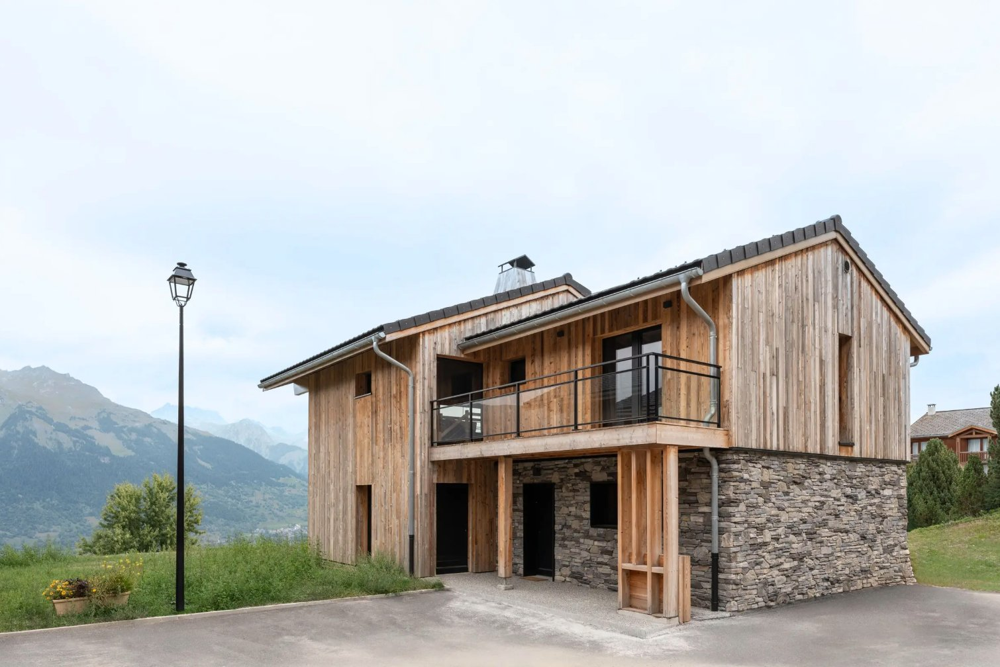

Préparez votre séjour
Tout ce qu'il faut savoir sur La Plagne Montalbert : comment venir, quand partir, où s'attabler, et comment profiter pleinement de la montagne.
Montalbert, l'âme savoyarde
À 1 350 mètres d'altitude, posé sur un balcon sud face à la chaîne du Beaufortain, Montalbert a su préserver ce que d'autres ont perdu : son authenticité.
Loin de l'effervescence des stations d'altitude verticales, Montalbert se vit comme un véritable village de montagne. Ses chalets en bois, ses chapelles séculaires, ses fermes encore en activité racontent une histoire qui précède de longtemps celle du ski. Le hameau s'est développé sans renier son passé pastoral — et c'est précisément ce qui fait sa rareté.
Côté ski, Montalbert offre pourtant l'un des accès les plus directs au domaine Paradiski — l'un des trois plus grands du monde, avec 425 kilomètres de pistes reliées par le téléphérique Vanoise Express. Skier le matin, déjeuner en terrasse face au massif, prolonger la soirée au jacuzzi face au coucher de soleil : ici, le luxe se mesure en silence, en lumière et en espace.
1 350 m d'altitude
Versant sud, ensoleillement exceptionnel, neige préservée en bordure de forêt.
425 km de pistes
Accès direct au domaine Paradiski, reliant La Plagne et Les Arcs via le Vanoise Express.
Cadre forestier
À la lisière des sapins, Montalbert offre un panorama dégagé sur les sommets.
Rejoindre le chalet
Montalbert est plus simple d'accès qu'il n'y paraît. À mi-chemin entre Lyon et Genève, le village est desservi par train, route et air.
En train
La gare TGV d'Aime-La Plagne se trouve à seulement quinze minutes en voiture du chalet. Depuis Paris, le TGV inOui rejoint Aime en environ quatre heures (départs directs depuis la gare de Lyon). Une fois sur place, des navettes et taxis assurent la liaison jusqu'à Montalbert — nous pouvons vous aider à organiser le transfert si vous le souhaitez.
En voiture
L'itinéraire le plus direct depuis le nord passe par l'autoroute A43 jusqu'à Chambéry, puis l'A430 jusqu'à Albertville et la N90 qui longe l'Isère jusqu'à Aime. De là, une route de montagne — sinueuse mais bien entretenue — mène à Montalbert en une vingtaine de minutes. Le parking du chalet (trois places privatives) est couvert et inclus dans la location.
Conseil : en hiver, des chaînes ou des pneus neige sont obligatoires sur la route de montagne. La Préfecture de Savoie l'impose entre novembre et mars (loi Montagne II).
En avion
Trois aéroports desservent la région : Chambéry (1h30 du chalet) reste le plus proche et propose des vols saisonniers depuis Londres, Amsterdam et plusieurs villes européennes. Lyon Saint-Exupéry (2h30) et Genève (2h45) offrent une desserte internationale beaucoup plus large. Des services de transferts privés peuvent être organisés depuis chaque aéroport — n'hésitez pas à nous le demander à la réservation.
Gare TGV
Aime-La Plagne · 15 min en voiture · Paris-Aime en 4h
Aéroports
Chambéry 1h30 · Lyon 2h30 · Genève 2h45
Voiture
Paris 6h30 · Lyon 2h30 · Marseille 4h · Genève 2h45
Quatre saisons, quatre visages
Le chalet vit toute l'année. Voici comment chaque saison transforme Montalbert et ce qu'elle réserve à ceux qui prennent le temps de l'explorer.
| Saison | Période | Ambiance |
|---|---|---|
| Hiver | Mi-décembre → fin avril | La saison reine : ski au pied, neige fraîche, jacuzzi sous les étoiles. Hautes saisons : Noël, Nouvel An, vacances de février. |
| Printemps | Mai → mi-juin | L'inter-saison : les pistes ferment, les sentiers s'éveillent. Idéal pour une escapade calme avant l'effervescence estivale. |
| Été | Mi-juin → fin août | Randonnée, VTT, rafting, parapente. Températures douces (18-25°C) et longues journées. Le secret bien gardé de la région. |
| Automne | Septembre → octobre | Forêts dorées, alpages tranquilles, premières neiges sur les sommets. Une saison méconnue pour les amateurs de silence. |
Nos recommandations
Pour skier dans les meilleures conditions : les semaines de janvier (hors vacances) et mars offrent la meilleure neige avec moins de monde sur les pistes. La luminosité de mars est aussi inégalée.
Pour les fêtes : Noël et le Nouvel An sont magiques au chalet — feu de cheminée, table dressée pour douze, jacuzzi face aux flocons. Réservation très tôt recommandée (dès l'été précédent).
Pour l'été : juillet et août permettent de profiter de l'altitude pour échapper à la canicule des plaines. Le chalet, exposé sud avec sa terrasse en mélèze, devient un refuge idéal pour les longues soirées d'été.
Où s'attabler
De la table d'altitude au restaurant gastronomique en passant par les bonnes adresses du village, voici notre sélection des tables qui valent le détour.
-
01
€€€
Le Forperet
L'expérience la plus marquante de la station. Une ferme-restaurant perdue en pleine forêt, accessible uniquement en chenillette le soir. Spécialités savoyardes servies dans une atmosphère chaleureuse et théâtrale. À réserver des semaines à l'avance.
-
02
€€
Le Refuge
Une adresse de village où la convivialité prime. Cuisine généreuse aux accents savoyards, terrasse ensoleillée l'après-midi, ambiance familiale. Parfait pour un déjeuner sans cérémonie après une matinée de ski.
-
03
€€ — €€€€
Restaurants d'altitude — sur les pistes
Le domaine Paradiski regorge de restaurants d'altitude accessibles à skis. Du chalet de famille à la table étoilée, chaque versant a ses adresses. Demandez-nous nos recommandations selon votre programme — nous connaissons les valeurs sûres et les secrets bien gardés.
-
04
€€€ — €€€€
Tables gastronomiques de la vallée
À 15-30 minutes du chalet, la vallée abrite plusieurs tables qui méritent qu'on prenne la voiture. Cuisines créatives, produits locaux d'exception, vues sur l'Isère. Idéal pour une soirée gastronomique sans la cohue des pistes.
-
05
Sur devis
Chef à domicile au chalet
Pour une soirée d'exception, un anniversaire ou simplement pour ne pas quitter le chalet, nous pouvons organiser un dîner avec un chef privé. Menu sur mesure, produits du terroir, service compris. À demander à la réservation.
Faire ses courses
Montalbert dispose d'une supérette pour les essentiels du quotidien (ouverte tous les jours en saison). Pour une course plus complète ou un approvisionnement pour douze, un Carrefour Market et un Super U se trouvent à Aime, à quinze minutes du chalet. Les producteurs locaux (fromages de Beaufort, charcuteries de Savoie) se trouvent dans la vallée — nous pouvons vous orienter.
Une station pensée pour les vôtres
Montalbert porte le label Famille Plus. Ici, tout est conçu pour que petits et grands trouvent leur compte, sans avoir à choisir entre tranquillité et animation.
Avec ses six chambres, le chalet ASTRO se prête naturellement aux séjours multi-générationnels : grands-parents, parents, enfants, cousins. La configuration des espaces permet à chacun d'avoir son cocon tout en partageant la grande salle à manger pour douze. La terrasse en mélèze, le jacuzzi face aux Alpes et la cuisine équipée pour recevoir font le reste.
Apprendre à skier
L'ESF de Montalbert et plusieurs écoles indépendantes proposent des cours dès trois ans (Piou-Piou) jusqu'aux niveaux de compétition. Les pistes vertes et bleues du front de neige sont idéales pour les premières glissades. Le jardin d'enfants, sécurisé et encadré, accueille les plus jeunes pendant que les parents skient sereinement.
Activités hors-ski
Au-delà des pistes, les enfants ne s'ennuient pas. Chiens de traîneau accessibles dès deux ans, piste de luge dédiée, patinoire couverte à La Plagne, espace aquatique Mille8 avec toboggans et rivière à contre-courant. L'été, le mountain cart, l'accrobranche et les sorties cueillette (myrtilles en juillet, champignons en septembre) prolongent l'aventure.
Petits + équipement
Pour les tout-petits, nous pouvons mettre à disposition un lit parapluie et une chaise haute à votre demande (à préciser à la réservation). Pour les plus grands, plusieurs loueurs de matériel de ski et de matériel de puériculture (poussettes tout-terrain, porte-bébés) sont accessibles à Aime.
Tout ce qu'il faut savoir
Une question ? Parlons-en.
Nous répondons personnellement à chaque demande sous 24h. Que ce soit pour vérifier une disponibilité, demander un devis sur mesure ou organiser un séjour particulier — nous sommes à votre écoute.
Réserver le chalet